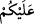
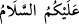
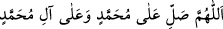
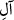
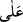

gibi duyularımın idrâkini ibka eder/yerinde bırakır, demektir. Buna göre ruh-i
Muhammedî’den küllî his ve şuur hiç ayrılmaz. O’nun için duyulardan ve bütün
varlıklardan habersiz olmak yoktur. Çünkü O, âlemin rûhu ve sirâyet eden sırrıdır.
İmam Süyûtî şöyle demiştir: “Ruhun bedenle öyle bir irtibâtı vardır ki bu sâyede
işitir, hisseder ve selâma mukabele eder. Hz. Peygamber (s.a.) refik-ı a‘lâda
(peygamberler ve meleklerden meydana gelen ruhlar topluluğunda) bu durumdadır.
O’nun ruhu bedeniyle irtibatlıdır. Bir kimse bu mübârek ruhun sâhibine selam ettiğinde,
o kendi mekânında olduğu halde o kimsenin selâmına mukâbele eder. Burada hata, ancak
gâib olanı şâhid/hâzır olana kıyas edip ruhun bilinen cisimlerin cinsinden olduğuna
inanmaktan ileri gelir. Cisimler ise bir yeri işgal ettiğinde başka bir yerde bulunamaz.
İşte bu, tamamen hatâdır. Mesela Hz. Peygamber (s.a.) mi‘rac gecesinde Mûsâ (a.s.)’ı
hem kabrinde ayakta namaz kılarken, hem de altıncı semâda görmüştür. Mûsâ (a.s.)’ın
ruhu orada bedenin misâlinde idi ve onun ruhunun kabrinde namaz kılacak ve refîk-ı
a‘lâda kendisine salât edene mukabele edecek şekilde bedeni ile irtibâtı vardı. Bu iki
durum arasında bir çelişki de yoktur. Çünkü ruhların hâli bedenlerin hâlinden başkadır.
Şâyet rûhun letâfeti ve nûrânîliği olmasaydı bazı velilerin duvarları yarıp geçmesi,
üzerinde toprak veya tabut olduğu halde ölünün kabrinde doğrulması mümkün olmazdı.
Bu şeylerden hiçbiri onu kalkıp oturmaktan alıkoyamaz.
Yine bir insanın cennetin sekiz kapısından bir anda girmesinin mümkün olduğu sahih
rivâyetlerde geçmektedir. Bu durum, bu dünyâdaki yaratılışta imkansız ise de
rûhâniyyetin galebesi sebebiyle orada mümkün olacaktır. Bazıları buna güneşi misal
getirmiştir. Çünkü güneş ruhlar gibi semâda, şuası/ışığı ise yerdedir.
Bir hadiste şöyle buyrulmuştur: “Bir kul dünyâda tanıdığı bir adamın kabrine uğrar
ve ona selam verirse o kimse mutlaka onu tanır ve selamına mukabele eder.”[279]
Herhalde o kimsenin selâma sözlü olarak değil de hâl lisanı ile mukabele ettiği
kasdedilmiştir. Çünkü kabir ehli amellerin kesilmiş olmasına üzülürler. Hatta
kendilerine verilecek bir selamı almaya ve onun sevabına nail olmaya hasret çekerler.
Şeyh Mazhar şöyle demiştir: “Ölülere selam vermek dirilere selam vermek gibidir.”
Hz. Peygamber (s.a.)’in “
” lafzını öne almak sûretiyle: “
” ölülerin
selâmıdır.”[280] buyurması Arapların âdet ve örfüne göredir. Çünkü onlar bir kabre
selam verdikleri zaman “
” lafzını öne alırlardı. Hz. Peygamber (a.s.) da onların
âdetleri üzere konuşmuş ve selam vermiştir.
Salevât getiren kimsenin “
” kelimesini tekrar ederek “
”
demesi gerekir. Çünkü Ehl-i sünnet, Şîa’yı reddetmek üzere “ ”den önce “
”
getirmeyi gerekli görmüşlerdir. Çünkü Şîa, Hz. Peygamber (s.a.) ile ailesi arasında “
”nın zikredilmesini kabul etmez. Bu konuda şöyle bir hadis naklederler: “Kim benimle
âilem arasını “
” ile ayırırsa o kimse benim şefaatime nail olamaz.”[281] Kuhistânî,
Isâm ve başkaları (Şîa’nın bu sözün hadîs olduğunu iddia ettiğini) söylemiş,